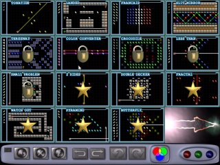
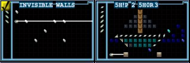
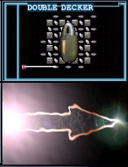

This next screen is a display of many of the puzzles shrunk down. You only need to click on the puzzle you want to play.
Some levels are "locked" and cannot be played until you solve more of the preceding ones.
(Note: In the demo version of aargon some levels can never be unlocked and display a gold star. These levels will instead take you to the purchase information.)

The Level Selection screen in demo mode. The bottom three levels are locked, and can't be played until the full version of the game is purchased.
The thumbnail screen gives you a quick snapshot of all the levels. There are two thumbnails screens each with 15 levels and you can flip between them by selecting the large arrow in the bottom right or top left square.
The thumbnail screen also shows you which levels you've solved. It is indicated in the top left hand corner of each puzzle. A solved puzzle has a little yellow check mark on it.

Two thumbnail levels, a solved one and an unsolved one. Both can be played.

The level shown here is locked and can not be played until the player has solved more of the preceding levels. The arrow below it can be used to see the next thumbnail screen. A similar arrow on the next screen can be used to come back to this screen.
NEXT SECTION : How To Solve a Puzzle
(back to index)